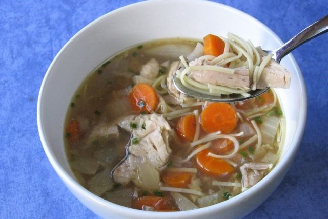

La sopa de pollo es un plato de invierno clásico, fácil de preparar y con ingredientes económicos que se encuentran fácilmente en todas las cocinas. Ésta es su receta.
Encendemos los fogones y vamos al lío:
Ingredientes (4 personas):
- 1 Kg. pollo.
- 2 l. de caldo de carne.
- 150 gr. fideos.
- 2 zanahorias.
- 1 tomate.
- 1 hoja de laurel.
- Pimienta.
Proceso de preparación:
- Partir el pollo en pedazos pequeños.
- Rehogarlos con las zanahorias, el tomate ,sal y pimienta a fuego lento hasta que esté dorado.
- Ponerlo en una cazuela con el caldo, el tomillo y el laurel.
- Dejar cocer a fuego lento durante unos 1 hora.
- Añadir los fideos y cocer 5 minutos.